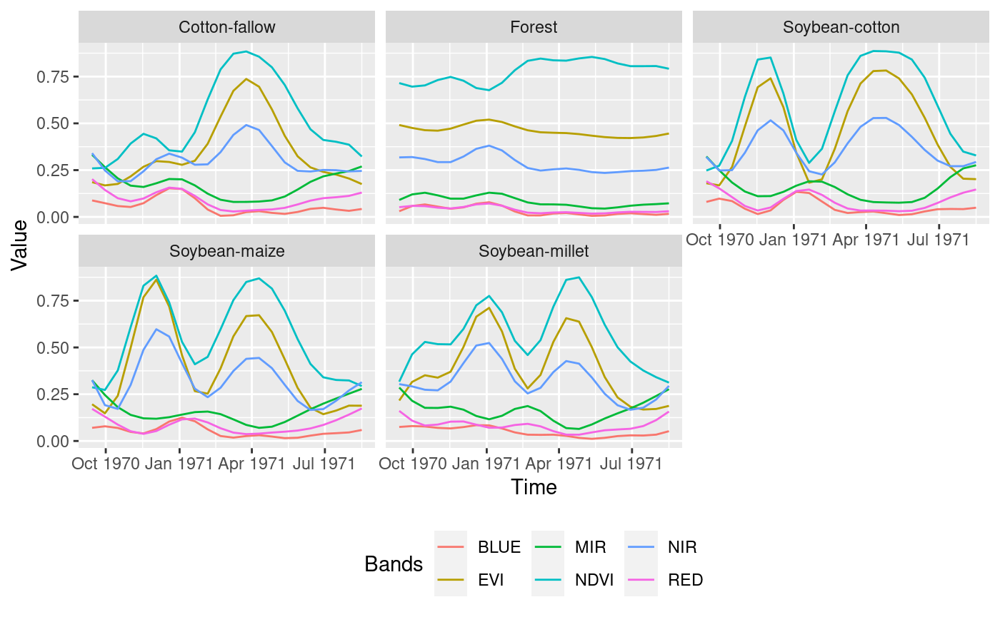
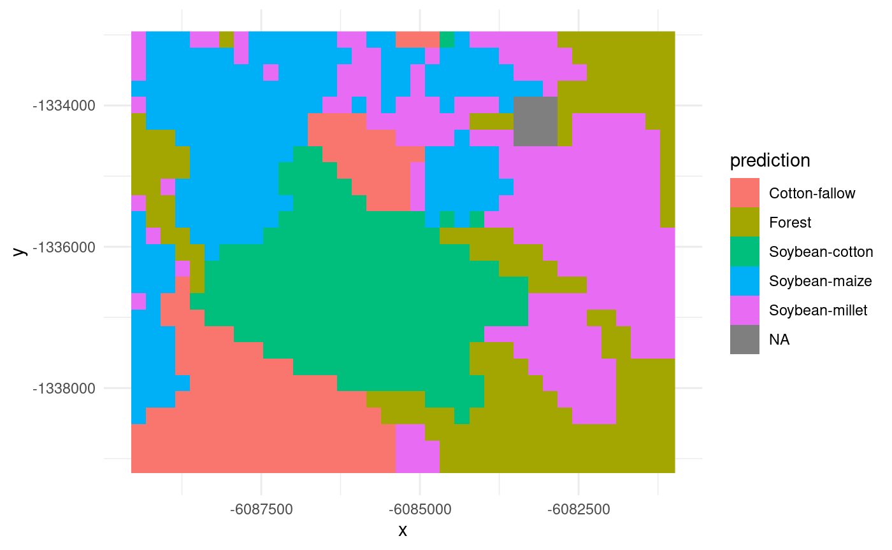

1. Land use mapping using TWDTW-1NN and stars
Victor Maus
Source:vignettes/landuse-mapping.Rmd
landuse-mapping.RmdThis vignette offers a concise guide for using version 1.0.0 or
higher of the dtwSat package to generate a land-use map.
The package utilizes Time-Weighted Dynamic Time Warping (TWDTW) along
with a 1-Nearest Neighbor (1-NN) classifier. The subsequent sections
will walk you through the process of creating a land-use map based on a
set of training samples and a multi-band satellite image time
series.
Reading Training Samples
First, let’s read a set of training samples that come with the
dtwSat package installation.
library(dtwSat)
samples <- st_read(system.file("mato_grosso_brazil/samples.gpkg", package = "dtwSat"), quiet = TRUE)Preparing the Satellite Image Time Series
The dtwSat package supports satellite images read into R
using the stars package. The installation comes with a set
of MOD13Q1 images for a region within the Brazilian Amazon. Note that
timing is crucial for the TWDTW distance metric. To create a consistent
image time series, we start by extracting the date of acquisition from
the MODIS file names (Didan 2015).
tif_files <- dir(system.file("mato_grosso_brazil", package = "dtwSat"), pattern = "\\.tif$", full.names = TRUE)
acquisition_date <- as.Date(regmatches(tif_files, regexpr("[0-9]{8}", tif_files)), format = "%Y%m%d")
print(acquisition_date)
## [1] "2011-09-14" "2011-09-30" "2011-10-16" "2011-11-01" "2011-11-17"
## [6] "2011-12-03" "2011-12-19" "2012-01-01" "2012-01-17" "2012-02-02"
## [11] "2012-02-18" "2012-03-05" "2012-03-21" "2012-04-06" "2012-04-22"
## [16] "2012-05-08" "2012-05-24" "2012-06-09" "2012-06-25" "2012-07-11"
## [21] "2012-07-27" "2012-08-12" "2012-08-28"Side note: The date in the file name is not the true acquisition date for each pixel. MOD13Q1 is a 16-day composite product, and the date in the file name is the first day of this 16-day period.
With the files and dates in hand, we can construct a stars satellite
image time series for dtwSat.
# read data-cube
dc <- read_stars(tif_files,
proxy = FALSE,
along = list(time = acquisition_date),
RasterIO = list(bands = 1:6))
# set band names
dc <- st_set_dimensions(dc, 3, c("EVI", "NDVI", "RED", "BLUE", "NIR", "MIR"))
# convert band dimension to attribute
dc <- split(dc, c("band"))
print(dc)
## stars object with 3 dimensions and 6 attributes
## attribute(s):
## Min. 1st Qu. Median Mean 3rd Qu. Max. NA's
## EVI 0.0636 0.2350 0.3883 0.40567166 0.5367 0.9994 0
## NDVI 0.1462 0.3855 0.6099 0.58831591 0.7849 0.9819 0
## RED 0.0015 0.0419 0.0692 0.08195341 0.1119 0.4007 0
## BLUE 0.0012 0.0216 0.0365 0.04992652 0.0617 0.4174 9
## NIR 0.0582 0.2465 0.3024 0.32209612 0.3813 0.7246 0
## MIR 0.0276 0.0966 0.1411 0.15764017 0.2104 0.4161 0
## dimension(s):
## from to offset delta refsys point
## x 1 37 -6089551 231.7 +proj=sinu +lon_0=0 +x_0=... FALSE
## y 1 27 -1332951 -231.7 +proj=sinu +lon_0=0 +x_0=... FALSE
## time 1 23 NA NA Date NA
## values x/y
## x NULL [x]
## y NULL [y]
## time 2011-09-14,...,2012-08-28Note that it’s important to set the date for each observation using
the parameter along. This will produce a 4D array
(data-cube) that will be collapsed into a 3D array by converting the
‘band’ dimension into attributes. This prepares the data for training
the TWDTW-1NN model.
Create TWDTW-KNN1 model
twdtw_model <- twdtw_knn1(x = dc,
y = samples,
cycle_length = 'year',
time_scale = 'day',
time_weight = c(steepness = 0.1, midpoint = 50),
formula = band ~ s(time))
print(twdtw_model)
##
## Model of class 'twdtw_knn1'
## -----------------------------
## Call:
## twdtw_knn1(x = dc, y = samples, time_weight = c(steepness = 0.1,
## midpoint = 50), cycle_length = "year", time_scale = "day",
## formula = band ~ s(time))
##
## Formula:
## band ~ s(time)
##
## Data:
## # A tibble: 5 × 2
## label observations
## <chr> <list>
## 1 Cotton-fallow <df [22 × 7]>
## 2 Forest <df [22 × 7]>
## 3 Soybean-cotton <df [22 × 7]>
## 4 Soybean-millet <df [22 × 7]>
## 5 Soybean-maize <df [22 × 7]>
##
## TWDTW Arguments:
## - time_weight: c(steepness=0.1, midpoint=50)
## - cycle_length: year
## - time_scale: day
## - origin: NULL
## - max_elapsed: Inf
## - version: f90In addition to the mandatory arguments x (satellite
data-cube) and y (training samples), the TWDTW distance
calculation also requires setting cycle_length,
time_scale, and time_weight. For more details,
refer to the documentation using ?twdtw. The argument
formula = band ~ s(time) is optional. If provided, training
samples time sereis are resampled using Generalized Additive Models
(GAMs), collapsing all samples with the same land-use label into a
single sample. This reduces computational demands. The sample in the
model can be visualized as follows:
plot(twdtw_model)
Land Use Prediction
Finally, we predict the land-use classes for each pixel location in the data-cube:
lu_map <- predict(dc, model = twdtw_model)
print(lu_map)
## stars object with 2 dimensions and 1 attribute
## attribute(s):
## prediction
## Cotton-fallow :149
## Forest :196
## Soybean-cotton:203
## Soybean-maize :208
## Soybean-millet:234
## NA's : 9
## dimension(s):
## from to offset delta refsys point x/y
## x 1 37 -6089551 231.7 +proj=sinu +lon_0=0 +x_0=... FALSE [x]
## y 1 27 -1332951 -231.7 +proj=sinu +lon_0=0 +x_0=... FALSE [y]The ‘time’ dimension was reduced to a single map. We can now
visualize it using ggplot:
ggplot() +
geom_stars(data = lu_map) +
theme_minimal()
Note that some pixels (in a 3x3 box) in the northeast part of the map
have NA values due to a missing value in the blue band
recorded on 2011-11-17. This limitation will be addressed in future
versions of the dtwSat package.
Ultimately, we can write the map to a TIFF file we can use:
write_stars(lu_map, "lu_map.tif")Further Reading
This introduction outlined the use of dtwSat for
land-use mapping. For more in-depth information, refer to the papers by
Maus et al. (2016) and Maus et al. (2019) and the twdtw R
package documentation.
For additional details on how to manage input and output satellite
images, check the
stars documentation.